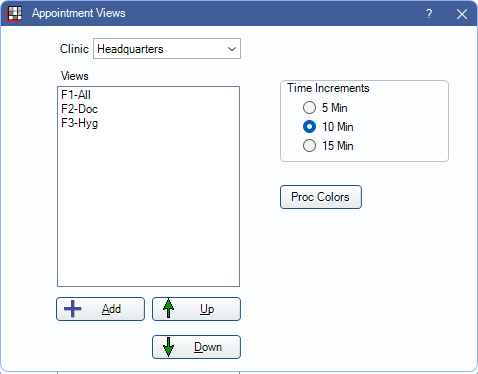

Appointment View Setup
Organize existing and create new Appointment Views and set Time Increments from the Appointment Views window.
In the Main Menu, click Setup, Appointments, Appointment Views.
 See our Appointment Views Webinar.
See our Appointment Views Webinar.
Appointment Views determine the Operatories and providers that show in the Appointments Module and the information that shows in a view's appointment box.
Clinic: If using Clinics, views are associated with specific Clinics. Users can only access appointment views for clinics they have access to.
Views: Lists the appointment views already setup. Each view is associated with a function key (e.g., F1). The Fkey is determined by the view's order in the list. Double-click a view to open Appointment View Edit.
Add: Click to create a new Appointment View. Opens Appointment View Edit.
Up/Down Arrows: Select a view, then use the arrows to rearrange Appointment Views in the list.
Time Increments: Set the time increment (5 minutes, 10 minutes, 15 minutes). The time increment affects all views. Updating the appointment time increment also affects Time Patterns on Procedures, Recall Types, and Appointment Types. When changing Time Increments, also review Time Patterns to match.
Proc Colors: Click to edit Proc Appt Colors.